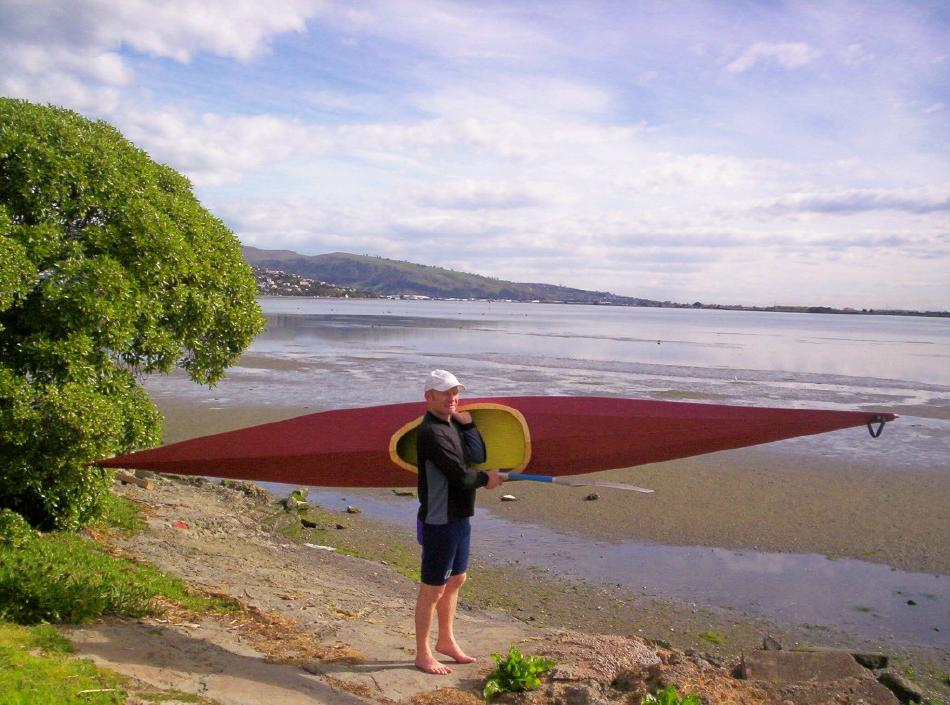

| Sea Otter-R by Bryan Sampson (NZ) | Menu Previous Page Next Page |
|

Bryan, from Christchurch , New Zealand has completed a stretched "Sea Otter" ( 16.2ft X 20in). The boat has a sewn Polyester skin with 3 coats of acrylic exterior paint and 1 coat Urethane.
|
|